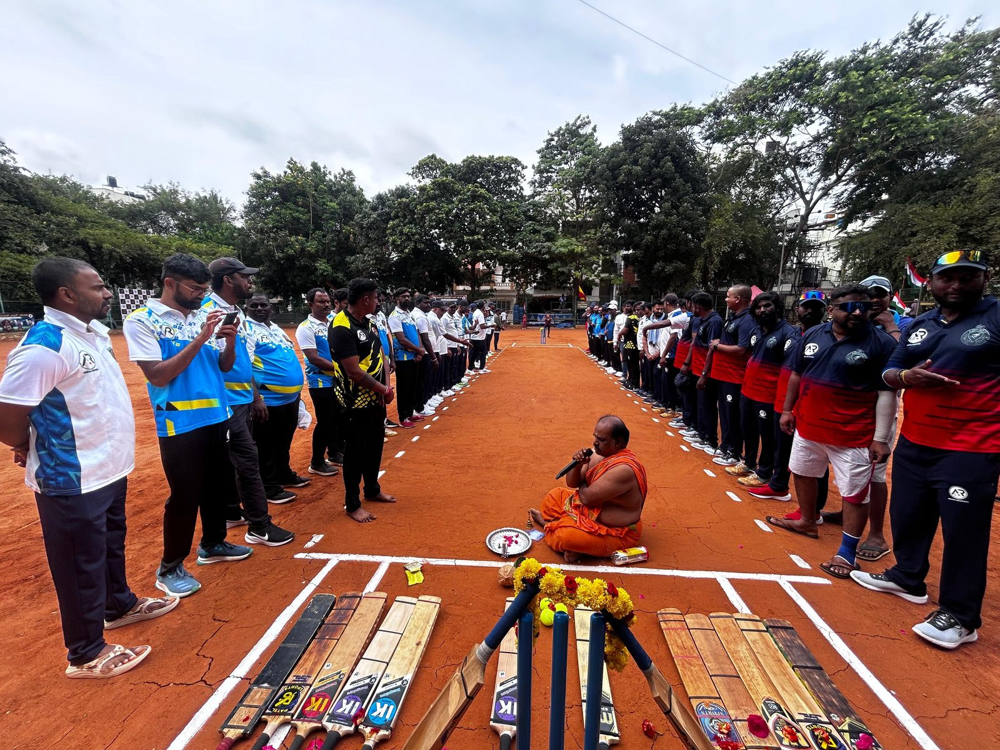
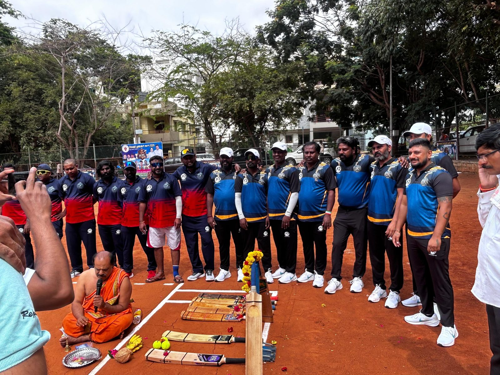
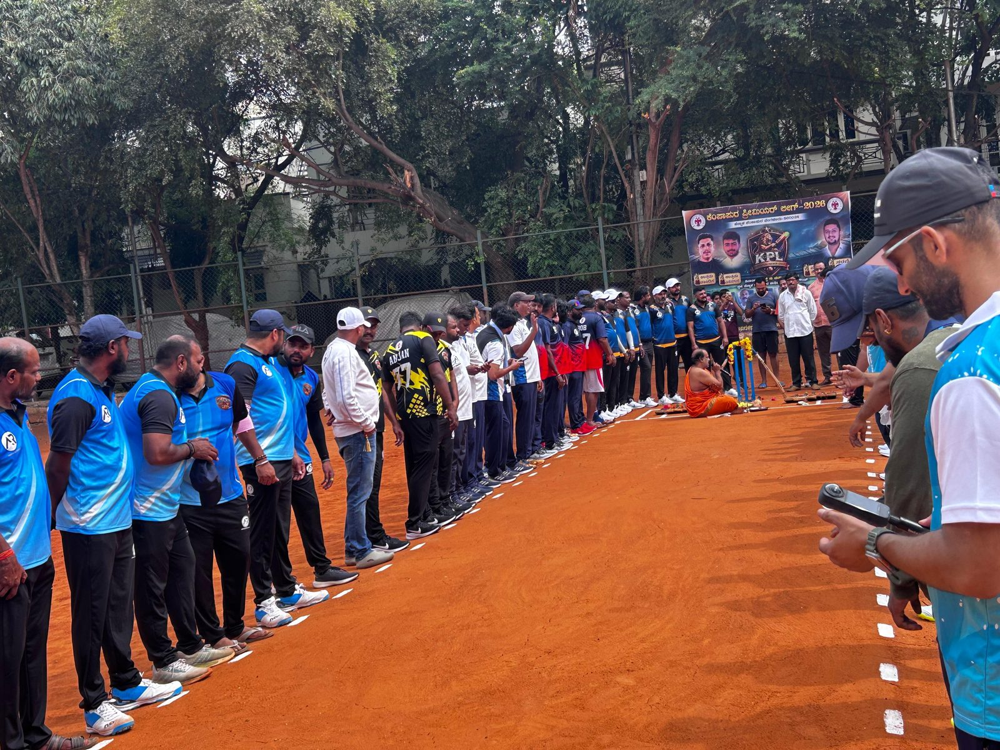
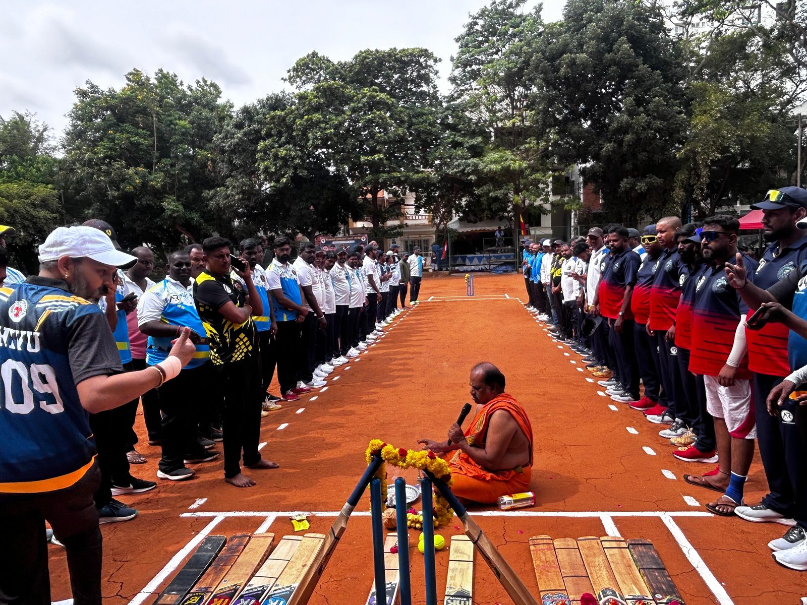

Akshara Charitable Trust pursues its objects through direct engagement with government bodies, institutions and communities. Below is a record of these ongoing efforts.
Akshara Charitable Trust is formally constituted under Registration No. 946/2019-2020.
The Trust requests government land to establish a medical education institution offering Pharmacy, Nursing and Paramedical courses — see the letter below.
The Trust took part in the Kesapura Premier League, a community cricket tournament, to gather support for supplying books and pens to children at a local government school — see photos below.
Submitted in pursuit of the Trust's objects around education and healthcare (Clauses 6.2 and 6.3 of the Trust Deed).
The Trust requested that suitable government land be sanctioned to construct educational infrastructure for medical and paramedical training, committing to bear all associated costs and to follow due legal procedure — in keeping with the Trust's stated objectives around education and healthcare.
The Trust supported the Kesapura Premier League, a community cricket tournament held in Kempapura, Bangalore — the Trust's own neighbourhood — opened with a traditional inaugural ceremony. The initiative was organised to gather support for supplying books and pens to children at a local government school, in keeping with the Trust's objectives around education (Clauses 6.2 and 6.9 of the Trust Deed).




Guided by Clause 6 of the Trust Deed, these are the areas Akshara Charitable Trust is actively working to expand into as resources and partnerships allow.
Following up on the Hosakote land request to establish Pharmacy, Nursing and Paramedical training infrastructure.
Working toward the establishment of schools and vocational training centres envisioned under Clauses 6.2–6.4.
Developing partnerships for watershed development, organic farming and afforestation drives under Clauses 6.12–6.13.
Akshara Charitable Trust welcomes partnerships with government bodies, institutions, donors and volunteers who share its objectives.